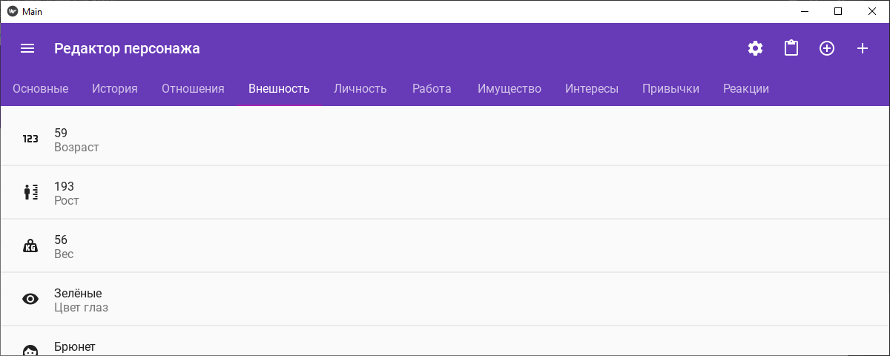

XNWP
| XNWP | |
|---|---|
|  | |
| Редактор персонажа | |
| eXtended Notes | |
| Предыдущая программа | Tropegen |
| Разработка | |
| Статус | Завершён |
| Разработка | 13.10.22 — 19.04.23 |
| Активная: 10.04.23 — 19.04.23 | |
| Последняя версия | 1.0 от 19.04.23 |
| Написан на | Python 3.11 (kivymd 2.1.0) |
| Инструменты | GitHub Actions, Visual Studio Code, python: [pydantic, flake8, mypy, black] |
| Платформы | Windows, Linux, Android |
| Статистика | |
| Строк кода | .py: 4207 |
| .json: 1386 | |
| Коммитов | 41 |
XNWP — редактор персонажей для мобильных устройств. Попытка сделать продолжение Tropegen'а с уходом в сторону повышенной кастомизируемости. Основная логика XNWP проста до банальности и умещается в 60 питонячьих строчек.
- Навигация:
- Абстракции
- Свойства
- Генераторы
- Персонажи
- Сравнение с Tropegen
- Ссылки
Абстракции
Свойства
Свойства — кирпичики для создания персонажей. Базовые свойства для удобства разделены по группам. Каждое свойство хранит следующие данные: имя свойства, значение свойства, иконка, выбранный генератор и его аргументы.
Генераторы
Генераторы — упрощение Tropegen'овых законов рандомизации. Основная их задача — выдать какое-то значение. В XNWP реализовано 5 генераторов:
- Число: Случайное число в диапазоне
Примеры: возраст и зарплата персонажа - Выбор: Случайное значение из списка
Примеры: цвет глаз или волос - Raname: Случайное значение на основе списка
Помогает создавать абсолютно новые слова, смешивая слова из списка
Также используется чисто поржать - + версии Выбора и Raname, использующие вместо списка любую из встроенных баз данных.
Персонажи
Персонажи — контейнеры для свойств. На самом деле в них можно представлять вообще любые сущности. При создании нового персонажа на основе шаблонного, все характеристики, имеющие генераторы, заполнятся новыми случайными значениями. Свойства персонажа разделяются на те же группы, на которые разделялся шаблон.
Сравнение с Tropegen
| Tropegen | XNWP |
|---|---|
| Язык программирования, фреймворк и фактически-поддерживаемые платформы | |
| C# 7.3 (Windows Forms) | Python 3.11 (kivymd) |
| Windows | Android |
| Время запуска и остановки на целевой платформе | |
| < 0.5 с | > 8 с |
| < 0.1 с | > 5 с если не дождаться и закрыть приложение раньше, то повредится .json файл |
| Формат кастомизации, сериализации и размер элементов | |
| .xml | .json |
| .tgc (own binary) | .json |
| ~ 160 байт | ~ 24 Кбайт |
| Возможности переноса | |
|
|